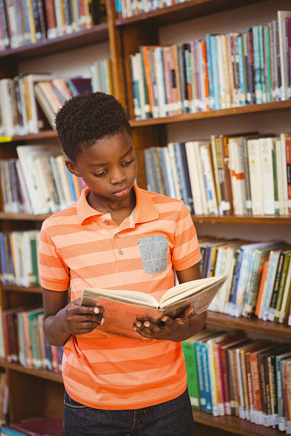

<div class="container">

      <mat-card class="backgroundfixed">
        <mat-card-content>

            <div class="top" fxLayout="column" fxLayout.xs="row" fxLayoutGap="10px" fxFlexFill>
                <div  fxFlex="" class="overlazparagraphs card1" id="materialdonations" data-rellax-speed="-40">
                    <h5><a> Library Setup and Furnishing:</a></h5>
                    <p><br>
    
                        At Korogocho Library, our commitment to fostering a rich learning environment relies on a diverse range of resources that cater to the varied needs and interests of our community. Our library strives to provide an extensive collection of books spanning different genres, topics, and age groups, ensuring that every reader especially children can find something captivating. Beyond traditional books, we seek to provide desktops to bolster digital resources, including e-books, online databases to meet the evolving needs of the kids. Additionally, we aspire to create vibrant spaces equipped with modern technologies, fostering collaborative learning and exploration. Your support in acquiring and maintaining these resources is invaluable, as it empowers us to enrich the educational and cultural experiences of our community members. Together, we can build a library that truly serves as a dynamic hub of knowledge, inspiration, and lifelong learning.
                    </p>
                    
                </div>
                <div fxFlex="" class="overlazparagraphs card1" id="feesdonations" data-rellax-speed="-40">
                    <h5><a> Fees Donations:</a></h5>
                <p><br>

                    Contributions to school fees donation initiative plays a pivotal role in ensuring that every student without the capacity has the opportunity to access quality education. Your generous donations directly impact the lives of students by alleviating the financial burden associated with school fees, allowing them to focus on their studies and pursue their academic goals without financial constraints. Through your support, we can create a more inclusive and equitable educational environment, fostering a sense of community and shared responsibility. Every donation, regardless of size, contributes to the empowerment of young minds and the cultivation of a brighter future. Together, let's make education accessible to all, breaking down barriers and opening doors to a world of possibilities for our students
                </p>
                </div>
                <div fxFlex="" class="overlazparagraphs card1" id="giftsdonations" data-rellax-speed="-40">
                    <h5><a> Food/Clothing Gifts Program:</a></h5>
                <p><br>

                    By donating non-perishable food items, you help us build a stronger and more resilient community. Your generosity ensures that families facing hardship have access to essential sustenance. In addition, clothing donations play a crucial role in providing warmth and dignity to individuals experiencing challenging circumstances. Your support goes beyond the tangible items; it brings hope, comfort, and a sense of belonging to those facing adversity.
                </p>
                </div>
            </div>

            <div class="Piclayout" fxLayout="row" fxLayout.xs="column" fxLayoutGap="10px" fxFlexFill>
                
            <div fxFlex="50" class="centeralignment">
                <div class="gridimages">
                    <!--  -->
                    

                    
                    
                    
                </div>
            </div>
            <div fxFlex="50" class="centeralignment">
                <mat-card style="height: 300px;background-color:rgba(0, 0, 0, 0.38);">
                    <p>
                        Thank You for Helping Us Make History! We have seen firsthand the amazing things that can happen when our community comes together to give back! 
                        We are thankful for the support that the Library Foundation has received during our Gives and look forward to sharing our stories of impact.
                    </p>
                   
                </mat-card>
            </div>
            </div>
        </mat-card-content>

      </mat-card>


</div>

<!-- <app-footer></app-footer> -->

